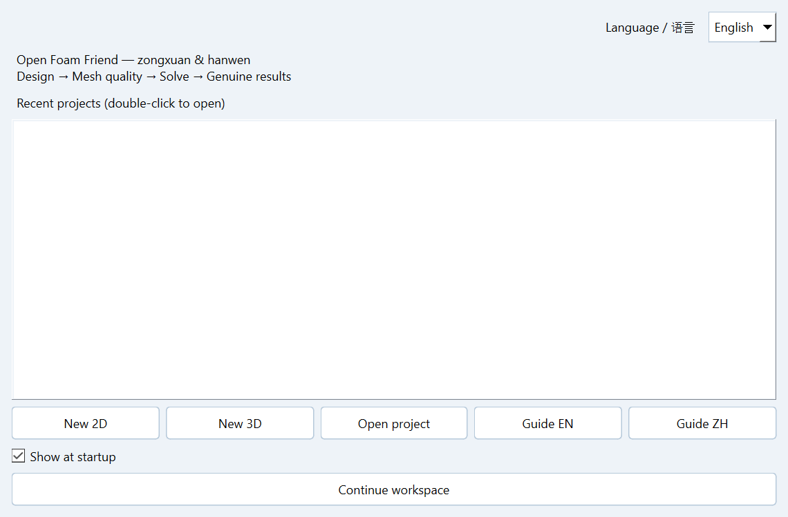

OpenFOAM Friend
A Windows desktop workbench connecting geometry, mesh design, OpenFOAM execution and scientific post-processing.面向 Windows 的科研桌面工作台，串联几何建模、网格设计、OpenFOAM 求解与科学后处理。
Authors: zongxuan & hanwen · Version 0.17.0 · Windows x64 · GPL-3.0-or-later作者：zongxuan 与 hanwen · 版本 0.17.0 · Windows x64 · GPL-3.0-or-later
Download
FULL · Complete offline environment
Includes the desktop application, isolated Windows Python/Qt/VTK/Gmsh runtime, signed Microsoft WSL installer and clean Ubuntu 24.04 image with OpenFOAM 14 and OpenMPI. Intended for computers without the Linux CFD environment.包含桌面软件、独立 Windows Python/Qt/VTK/Gmsh 运行环境、微软签名的 WSL 安装器，以及预装 OpenFOAM 14 与 OpenMPI 的干净 Ubuntu 24.04 镜像。适合尚未配置 Linux CFD 环境的电脑。
Download FULL ZIPApproximately 1.68 GB · Administrator permission may be needed for WSL.约 1.68 GB · 首次安装 WSL 可能需要管理员权限。
LITE · Application and diagnostics
Includes the same Windows application runtime, without the WSL installer or Linux image. Missing OpenFOAM/WSL is reported, and Linux/system components are never installed. Use with your existing supported OpenFOAM environment.包含相同的 Windows 软件运行环境，不含 WSL 安装器与 Linux 镜像。缺少 OpenFOAM/WSL 时明确报错，不安装 Linux 或系统组件。适合已有受支持 OpenFOAM 环境的电脑。
Download LITE ZIPApproximately 522 MB · No system Python required.约 522 MB · 无需预装系统 Python。
Release notes and all files · SHA-256 checksums
Installation: Extract the entire ZIP, then double-click Setup.cmd. Do not run inside the ZIP. Both the installer and welcome page offer Chinese/English language selection.完整解压 ZIP，然后双击 Setup.cmd。不要在压缩包内运行。安装器与软件欢迎页均可直接选择中文或英文。
Requirements: Windows 10 build 19041+ or Windows 11, Intel/AMD x64; 10 GB free minimum, 15 GB+ recommended. First-time WSL setup requires hardware virtualization and may require a manual restart. Corporate policy restrictions are not bypassed. ARM64, macOS and native Linux GUI builds are not included.系统要求：Windows 10 build 19041 及以上或 Windows 11，Intel/AMD x64；至少 10 GB 可用空间，建议 15 GB 以上。首次配置 WSL 需要硬件虚拟化，可能需要手动重启。不绕过企业策略限制。不提供 ARM64、macOS 与原生 Linux GUI 安装包。
One connected workflow
| Stage | Capabilities |
|---|
| Geometry | Dimensioned sketches, two-click lines, arcs, shapes and regions; 3D extrusion preview and standard camera orientations.带尺寸的草图、两点直线、圆弧、形状与区域；三维拉伸预览和标准视角。 |
| Mesh and quality | Structured O-grid and partitioned boxes, manual topology, blockMesh/Gmsh, uniform/graded spacing; actual checkMesh metrics and offending-face locations.结构化 O 网格与分块盒体、手动拓扑、blockMesh/Gmsh、均匀及渐变间距；真实 checkMesh 指标与低质量面的位置。 |
| Simulation | Foundation 14 foamRun/incompressibleFluid, PIMPLE controls, 24-model catalogue, CPU-budgeted queue, pause/continue and SSH/Slurm configuration.Foundation 14 foamRun/incompressibleFluid、PIMPLE 设置、24 种模型目录、按核心预算排队、暂停/继续以及 SSH/Slurm 配置。 |
| Post-processing | VTK field views, playback, adjustable colour maps, U/p/vorticity, complete .foam cases, CSV/GIF/MAT and single-sided unwindowed force FFT.VTK 场可视化、播放、可调色条、U/p/涡量、完整 .foam 算例、CSV/GIF/MAT 与无加窗的单边力系数 FFT。 |

Measured verification
Three fresh 3D runs used 5,120 cells and four MPI ranks, covering structured O-grid, manual Gmsh and kOmegaSST. Genuine fields and MAT/CSV/GIF/.foam exports were verified. Clean Linux-image imports, isolated Windows runtime loading, Chinese/space-containing install paths and interface regressions were also tested.三个全新三维算例均为 5,120 网格与 4 个 MPI 进程，覆盖结构化 O 网格、手动 Gmsh 和 kOmegaSST。核验了真实场以及 MAT/CSV/GIF/.foam 导出。还测试了干净 Linux 镜像导入、独立 Windows 运行环境加载、中文及带空格的安装路径与界面回归。
These 0.04/0.06/0.10 s runs validate the workflow, not physical convergence. The physical test host was Windows 10 19045 x64 with WSL already enabled. A first-ever WSL BIOS/UAC/reboot sequence, all Windows 11/GPU combinations and a production remote cluster have not been physically qualified. The bundled Microsoft OpenSSH client is an upstream preview. This is a research engineering release.0.04/0.06/0.10 s 算例用于验证工作流程，不证明物理收敛。实体测试机为已启用 WSL 的 Windows 10 19045 x64。尚未在实体新机上完整验证首次 WSL BIOS/UAC/重启流程、全部 Windows 11/GPU 组合或生产超算提交。随包微软 OpenSSH 客户端为上游预览版。本版本为科研工程发布版。
Inspect measured evidence
Open-source license
OpenFOAM Friend application code is licensed under GNU GPL v3 or later (GPL-3.0-or-later). Authors: zongxuan & hanwen. Third-party components retain their own licenses.OpenFOAM Friend 应用源码采用 GNU GPL 第 3 版或之后的版本（GPL-3.0-or-later）。作者：zongxuan 与 hanwen。第三方组件保留各自的许可证。
Documentation and support